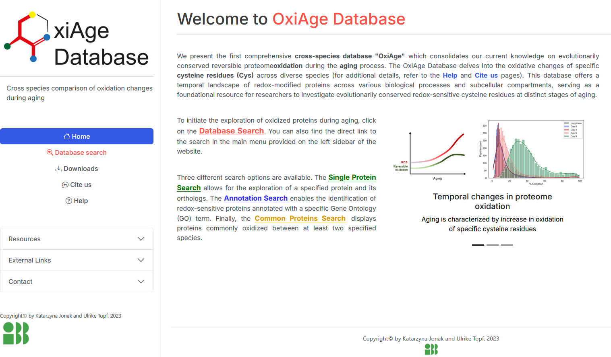

Protocol to analyze steps of ribosome biogenesis in nuclear and cytosolic fractions of yeast cells
Download protocol (PDF)
OxiAge Database
http://oxiage.ibb.waw.pl/Resource created by our lab that collects data on reversible oxidation of protein cysteine residues during aging in S. cerevisiae, C. elegans, D. melanogaster and M. musculus.

Lecture given by Ulrike for the Polish Biochemical Society
June 10th, 2021